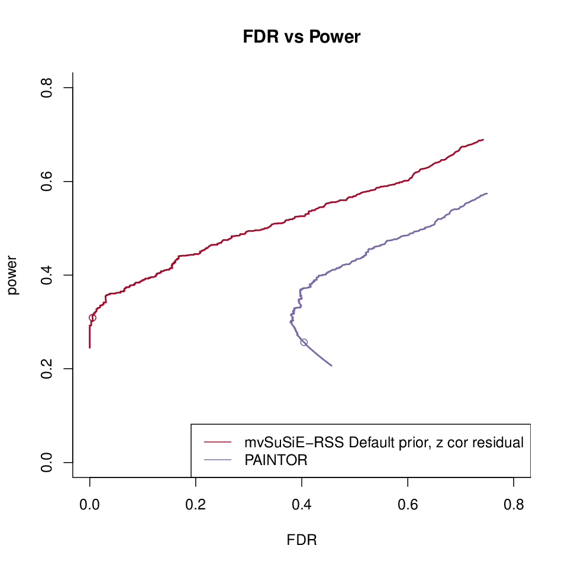
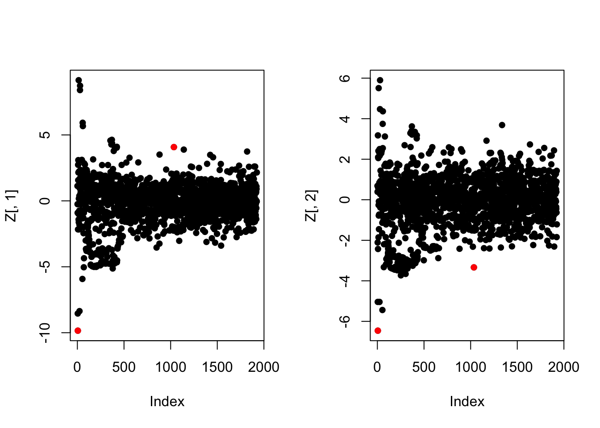
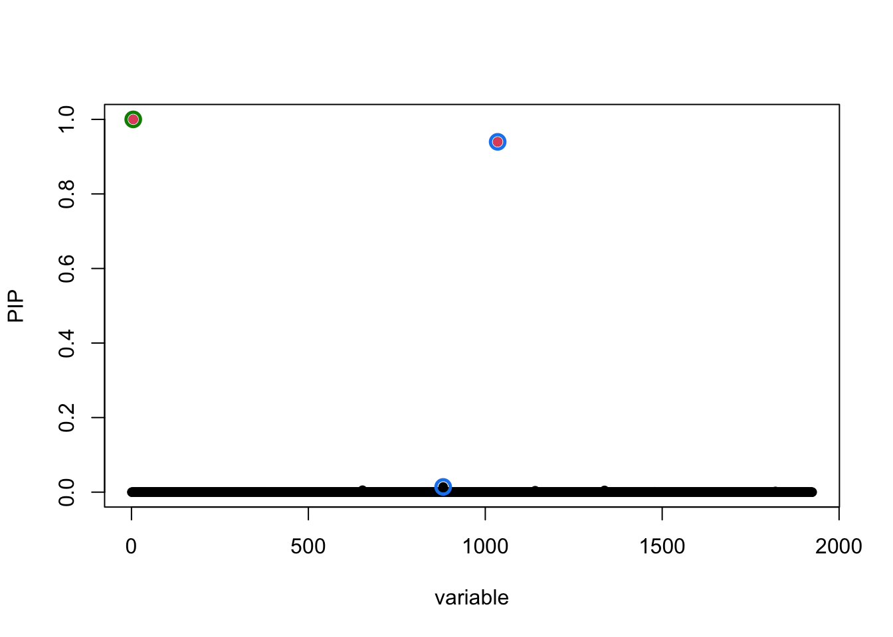
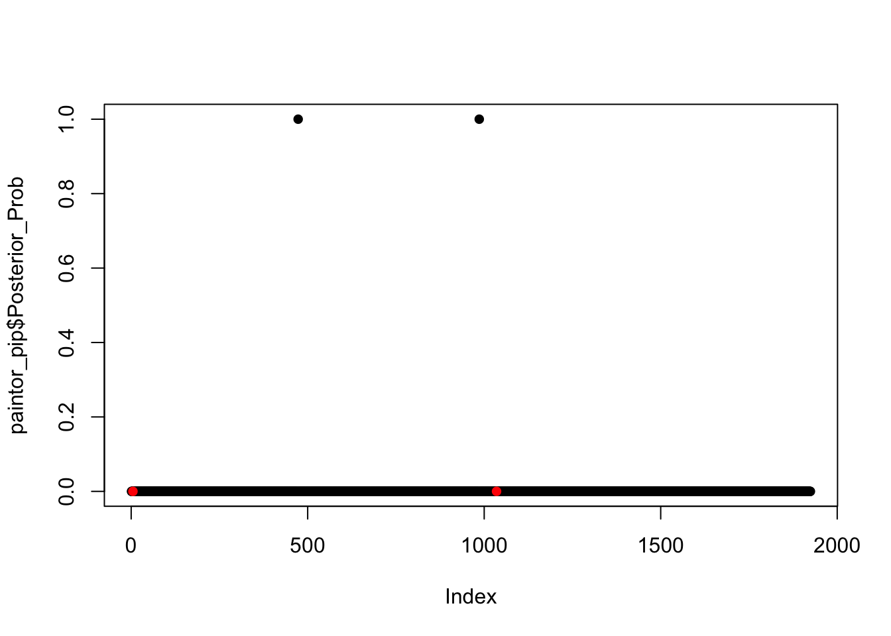

Last updated: 2021-07-12
Checks: 7 0
Knit directory: mmbr-rss-dsc/
This reproducible R Markdown analysis was created with workflowr (version 1.6.2). The Checks tab describes the reproducibility checks that were applied when the results were created. The Past versions tab lists the development history.
Great! Since the R Markdown file has been committed to the Git repository, you know the exact version of the code that produced these results.
Great job! The global environment was empty. Objects defined in the global environment can affect the analysis in your R Markdown file in unknown ways. For reproduciblity it’s best to always run the code in an empty environment.
The command set.seed(20200227) was run prior to running the code in the R Markdown file. Setting a seed ensures that any results that rely on randomness, e.g. subsampling or permutations, are reproducible.
Great job! Recording the operating system, R version, and package versions is critical for reproducibility.
Nice! There were no cached chunks for this analysis, so you can be confident that you successfully produced the results during this run.
Great job! Using relative paths to the files within your workflowr project makes it easier to run your code on other machines.
Great! You are using Git for version control. Tracking code development and connecting the code version to the results is critical for reproducibility.
The results in this page were generated with repository version 362f5f4. See the Past versions tab to see a history of the changes made to the R Markdown and HTML files.
Note that you need to be careful to ensure that all relevant files for the analysis have been committed to Git prior to generating the results (you can use wflow_publish or wflow_git_commit). workflowr only checks the R Markdown file, but you know if there are other scripts or data files that it depends on. Below is the status of the Git repository when the results were generated:
Ignored files:
Ignored: .DS_Store
Ignored: .Rhistory
Ignored: .Rproj.user/
Ignored: data/.DS_Store
Ignored: output/.DS_Store
Untracked files:
Untracked: code/mvrss_CSlfsr0.01_results_code.R
Untracked: code/rss_results_code.R
Untracked: code/ukbpaper_results_code.R
Untracked: data/ENSG00000140265.12.Multi_Tissues.rds
Untracked: data/FastQTLSumStats.mash.FL_PC3.rds
Untracked: data/LDoriginal.Ycor.mvsusierss.summary.csv
Untracked: data/LDoriginal.zcor.mvsusierss.CS_lfsr0.01.summary.csv
Untracked: data/LDoriginal.zcor.mvsusierss.CS_purity0.2.CS_lfsr0.01.summary.csv
Untracked: data/LDoriginal.zcor.mvsusierss.summary.csv
Untracked: data/Multi_Tissues.ENSG00000089486.RDS
Untracked: data/PAINTOR_problem_2indep/
Untracked: data/Ycov.mvsusiesuff.CS_lfsr0.01.summary.csv
Untracked: data/Ycov.mvsusiesuff.CS_purity0.2.CS_lfsr0.01.summary.csv
Untracked: data/Ycov.mvsusiesuff.summary.csv
Untracked: data/bloodcells_chr1.109982983.110720764/
Untracked: data/mmbr_ukb_simulation/
Untracked: data/mmbr_ukb_simulation_problem/
Untracked: data/region_units.txt
Untracked: data/regions.csv
Untracked: data/susierss_notrem_covariates.summary.csv
Untracked: data/susierss_rem_covariates.summary.csv
Untracked: data/susiesuff.summary.csv
Untracked: data/ukb_rss_naive_lfsr_problem.rds
Untracked: data/ukb_rss_naive_pip_problem.rds
Untracked: data/ukbbloodcells_prepare.canonical.rds
Untracked: data/ukbbloodcells_prepare.flash.rds
Untracked: data/ukbbloodcells_prepare.pca.rds
Untracked: data/ukbbloodcells_prepare.rds
Untracked: output/GTExprofile_res.rds
Untracked: output/GTExprofile_resL1.rds
Untracked: output/GTExprofile_resL1_elbo.rds
Untracked: output/GTExprofile_resL3.rds
Untracked: output/GTExprofile_resL3_elbo.rds
Untracked: output/GTExprofile_res_elbo.rds
Untracked: output/GTExprofile_resapprox.rds
Untracked: output/GTExprofile_resapproxL1.rds
Untracked: output/GTExprofile_resapproxL1_elbo.rds
Untracked: output/GTExprofile_resapproxL3.rds
Untracked: output/GTExprofile_resapproxL3_elbo.rds
Untracked: output/GTExprofile_resapprox_elbo.rds
Untracked: output/GTExprofile_resapproxdiag.rds
Untracked: output/GTExprofile_resapproxdiagL1.rds
Untracked: output/GTExprofile_resapproxdiagL1_elbo.rds
Untracked: output/GTExprofile_resapproxdiagL3.rds
Untracked: output/GTExprofile_resapproxdiagL3_elbo.rds
Untracked: output/GTExprofile_resapproxdiag_elbo.rds
Untracked: output/GTExprofile_resdiag.rds
Untracked: output/mmbr_gtex_res.Rprof
Untracked: output/mmbr_gtex_res_approx.Rprof
Untracked: output/mmbr_gtex_res_approx_diag.Rprof
Untracked: output/mmbr_gtex_res_diag.Rprof
Untracked: output/mnm_missing_output.20200527.rds
Untracked: output/test
Untracked: output/tiny_data_211_cond2L2.gif
Untracked: output/tiny_data_211_cond2L2.pdf
Untracked: output/tiny_data_211_cond2L3.gif
Untracked: output/tiny_data_211_cond2L3.pdf
Untracked: output/tiny_data_211_cond2initL3.gif
Untracked: output/tiny_data_211_cond2initL3.pdf
Untracked: output/ukb_rss_20200107/
Untracked: output/ukb_rss_20210313/
Unstaged changes:
Modified: analysis/mmbr_missing_rss_problem1.Rmd
Note that any generated files, e.g. HTML, png, CSS, etc., are not included in this status report because it is ok for generated content to have uncommitted changes.
These are the previous versions of the repository in which changes were made to the R Markdown (analysis/mmbr_rss_ukb_simulation_paintor.Rmd) and HTML (docs/mmbr_rss_ukb_simulation_paintor.html) files. If you’ve configured a remote Git repository (see ?wflow_git_remote), click on the hyperlinks in the table below to view the files as they were in that past version.
| File | Version | Author | Date | Message |
|---|---|---|---|---|
| Rmd | 362f5f4 | zouyuxin | 2021-07-12 | wflow_publish(“analysis/mmbr_rss_ukb_simulation_paintor.Rmd”) |
| html | 3af4b85 | zouyuxin | 2021-07-12 | Build site. |
| Rmd | bf69c0d | zouyuxin | 2021-07-12 | wflow_publish(“analysis/mmbr_rss_ukb_simulation_paintor.Rmd”) |
| html | 69a8cfb | zouyuxin | 2021-02-11 | Build site. |
| Rmd | 6697f4a | zouyuxin | 2021-02-11 | add comparison with paintor |
This is result from our mvSuSiE RSS simulation using UKB data. There are 600 datasets. The max PVE across traits is 0.0005.
For each dataset, we simulate 2 signals with independent effects in 2 conditions.
We run mvSuSiE-suff and mvSuSiE-rss with L = 10. We estimate prior weights using ‘EM’ method.
We use PAINTORv3.0 from github. Since we run PAINTOR without any annotations, we create a ‘dummy’ annotation file for each region with all 1’s. Using the mcmc option, the posterior inclusion probability is always 0 in several test dataset. The same issue is reported here. Therefore, we use -enumerate 2 option, which enumerate all possible configurations up to 2 causals in each region.
We compare PIP for each SNP. PAINTOR has very high FDR.

Here is one example:
Z = as.matrix(data.table::fread('data/PAINTOR_problem_2indep/test.PAINTOR', header=TRUE))
B = readRDS('data/PAINTOR_problem_2indep/test.PAINTOR.2indep.rds')
ld = as.matrix(data.table::fread('data/PAINTOR_problem_2indep/test.PAINTOR.ld'))The variable 5, 1035 has non-zero effect in 2 traits.
The z scores at true effects are
Z[c(5,1035),] 1 2
[1,] -9.844684 -6.459602
[2,] 4.076751 -3.336378par(mfrow=c(1,2))
plot(Z[,1], pch=16)
points(c(5, 1035), Z[c(5,1035),1], pch=16, col = 'red')
plot(Z[,2], pch = 16)
points(c(5, 1035), Z[c(5,1035),2], pch=16, col = 'red') Using mvSuSiE with default prior,
library(ggplot2)
m_init = mvsusieR::create_mash_prior(mixture_prior = list(matrices=mvsusieR:::create_cov_canonical(2), weights=NULL),
null_weight=NULL, max_mixture_len=-1)
m = mvsusieR::mvsusie_rss(Z, R = ld, L=10, prior_variance=m_init,
residual_variance=diag(2),
compute_objective=TRUE,
estimate_prior_variance=T, estimate_prior_method='EM',
precompute_covariances=T, n_thread=1,
max_iter=1000, track_fit = FALSE, verbosity = FALSE)Warning in mvsusie_core(data, s_init, L, prior_variance, prior_weights, :
precompute_covariances option is disabled when prior variances are to be
updated.susieR::susie_plot(m, y = 'PIP', b = B) From PAINTOR, the PIPs are
paintor_pip = data.table::fread('data/PAINTOR_problem_2indep/test.PAINTOR.results')
plot(paintor_pip$Posterior_Prob, pch=16)
points(c(5, 1035), paintor_pip$Posterior_Prob[c(5, 1035)], pch=16, col='red') The z scores for SNPs with PIP=1 in PAINTOR are
Z[which(paintor_pip$Posterior_Prob>0.5),] 1 2
[1,] 0.0245403 -1.741608
[2,] -2.2387469 -0.407986
sessionInfo()R version 4.0.3 (2020-10-10)
Platform: x86_64-apple-darwin17.0 (64-bit)
Running under: macOS Big Sur 10.16
Matrix products: default
BLAS: /Library/Frameworks/R.framework/Versions/4.0/Resources/lib/libRblas.dylib
LAPACK: /Library/Frameworks/R.framework/Versions/4.0/Resources/lib/libRlapack.dylib
locale:
[1] en_US.UTF-8/en_US.UTF-8/en_US.UTF-8/C/en_US.UTF-8/en_US.UTF-8
attached base packages:
[1] stats graphics grDevices utils datasets methods base
other attached packages:
[1] ggplot2_3.3.5 workflowr_1.6.2
loaded via a namespace (and not attached):
[1] progress_1.2.2 softImpute_1.4-1 tidyselect_1.1.0
[4] xfun_0.22 purrr_0.3.4 ashr_2.2-51
[7] lattice_0.20-41 colorspace_2.0-2 vctrs_0.3.8
[10] generics_0.1.0 htmltools_0.5.1.1 yaml_2.2.1
[13] utf8_1.2.1 rlang_0.4.11 mixsqp_0.3-46
[16] later_1.1.0.1 pillar_1.6.1 glue_1.4.2
[19] withr_2.4.2 DBI_1.1.1 mashr_0.2.49
[22] plyr_1.8.6 matrixStats_0.59.0 lifecycle_1.0.0
[25] stringr_1.4.0 munsell_0.5.0 gtable_0.3.0
[28] mvtnorm_1.1-2 evaluate_0.14 knitr_1.31
[31] httpuv_1.5.5 invgamma_1.1 irlba_2.3.3
[34] fansi_0.5.0 highr_0.8 Rcpp_1.0.7
[37] susieR_0.11.43 promises_1.2.0.1 scales_1.1.1
[40] rmeta_3.0 truncnorm_1.0-8 abind_1.4-5
[43] fs_1.5.0 hms_1.1.0 digest_0.6.27
[46] stringi_1.5.3 dplyr_1.0.5 grid_4.0.3
[49] rprojroot_2.0.2 tools_4.0.3 magrittr_2.0.1
[52] tibble_3.1.2 crayon_1.4.1 whisker_0.4
[55] pkgconfig_2.0.3 ellipsis_0.3.2 Matrix_1.3-2
[58] prettyunits_1.1.1 SQUAREM_2021.1 data.table_1.14.0
[61] reshape_0.8.8 assertthat_0.2.1 rmarkdown_2.7
[64] R6_2.5.0 git2r_0.28.0 compiler_4.0.3
[67] mvsusieR_0.0.3.0436